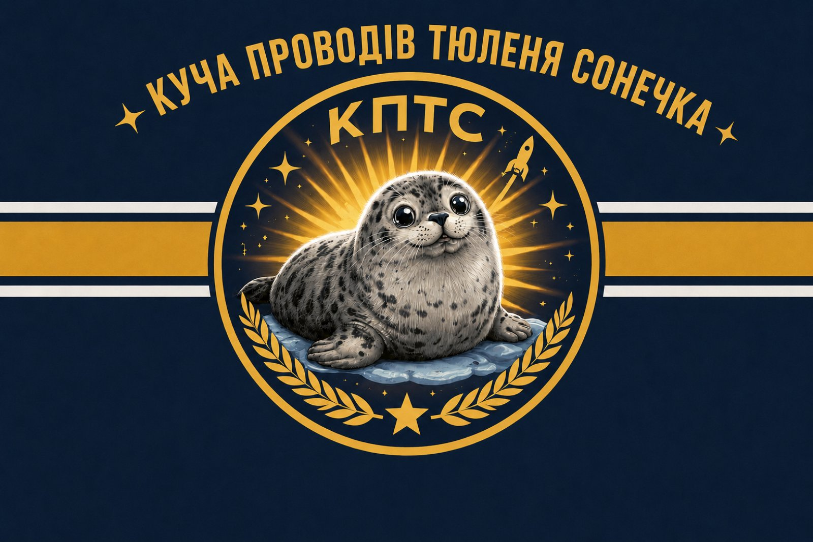

Електроніка
Компоненти, схеми й радіотехніка. Вивчаємо будову речей на практиці.
КПТС — невеликий проєкт про електроніку, експерименти та речі, які ще зарано списувати. Розбираємося, ремонтуємо, вигадуємо власне.

КПТС розвивається поступово — від ідеї та знайденої плати до пристрою, який знову працює. Без великої фабрики: стіл, інструменти й бажання зрозуміти, що всередині.
Компоненти, схеми й радіотехніка. Вивчаємо будову речей на практиці.
Шукаємо причину несправності й повертаємо корисну техніку до роботи.
Перевіряємо технічні ідеї, збираємо прототипи й навчаємося на кожному запуску.
Спочатку з’ясувати, що за річ потрапила на стіл. Потім вирішити, на що вона ще здатна.
Старі й непотрібні пристрої — не обов’язково сміття. Іноді достатньо обережно розібрати їх, знайти несправність, замінити деталь або придумати інше застосування. У цьому й полягає підхід КПТС до майстерної справи.
Тут немає вигаданого каталогу товарів. Проєкти з’являтимуться в міру роботи: з фото, деталями, статусом і чесною розповіддю про результат.
З часом у КПТС можуть з’явитися власні пристрої, відновлена техніка та нові технічні експерименти. Спочатку — робити, перевіряти й розповідати, що вийшло.